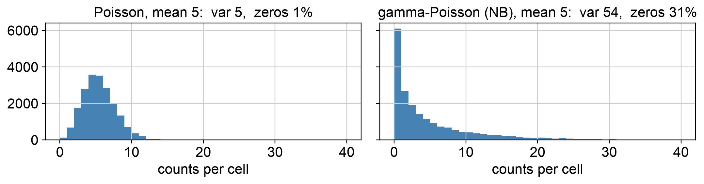
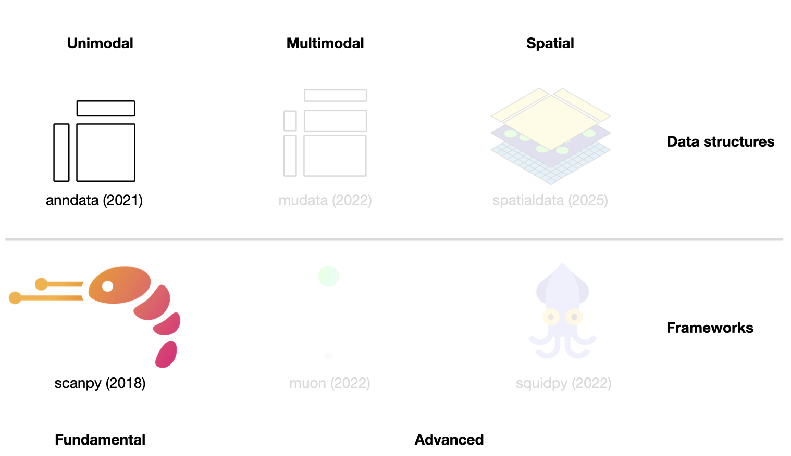
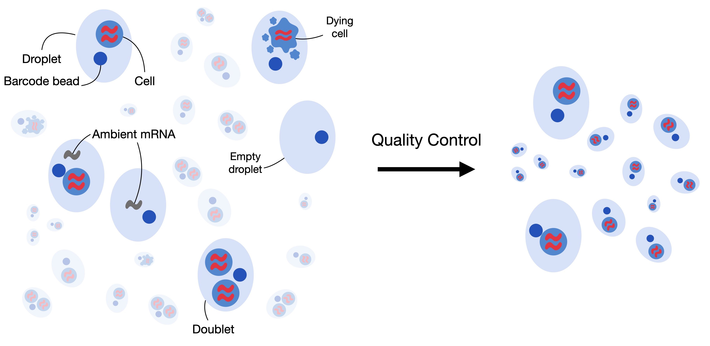
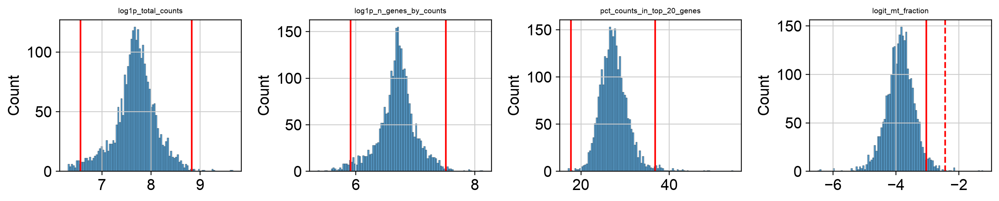
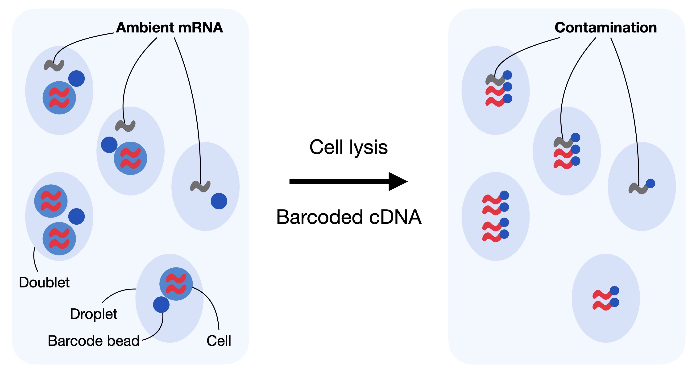
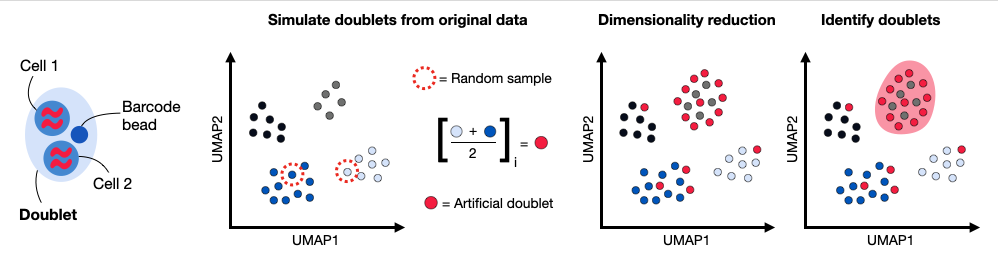
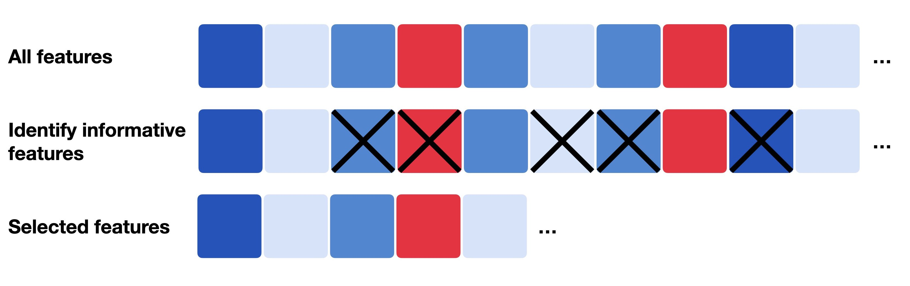

Heumos, Schaar, Lance et al.Best practices for single-cell analysis across modalities Nature Reviews Genetics, 2023 — https://www.sc-best-practices.org
Licensed Apache 2.0. Parts I–III of the book:
Introduction — what scRNA-seq measures, and the data structures
Preprocessing and visualization — QC, normalization, feature selection, dimensionality reduction
(next lecture) Identifying cellular structure
What makes this a data-science problem
A modern experiment yields a matrix of tens of thousands of cells by tens of thousands of genes, of which ~90% of entries are zero.
Everything in this lecture is a response to one of three facts: the matrix is sparse, the measurement is noisy, and the biology you want is confounded with the technology you used to see it.
Reading these slides
Unbadged slides follow the book. beyond the book marks material it does not contain; extends the book marks a book topic taken further. The book’s own code leans on R in places (SoupX, scDblFinder, scran, scry); these decks stay in Python and say so where they substitute.
Roadmap
The book’s preprocessing chapters, in order
Quality control — remove dying and broken cells, correct ambient RNA, flag doublets (two cells in one droplet)
Normalization — make cells comparable
Feature selection — discard uninformative genes
Dimensionality reduction — 30 000 genes down to 2
Before all of it sits raw data processing: turning sequencer output into the count matrix.
The algorithms selected throughout this process can heavily affect downstream analysis and interpretation of the data.
And the tension that runs through all of it
Filter too much and you lose rare cell populations — exactly the biology that motivated a single-cell experiment.
Filter too little and you cannot annotate anything, because dying cells and doublets form their own spurious clusters.
There is no setting that is right for every dataset.
What the data is
The building block of life
Cells
Robert Hooke, looking at cork through a microscope in 1665, called the compartments he saw cells — they reminded him of the rooms of a monastery.
Every organism is built from them. A human has on the order of \(3 \times 10^{13}\) of them, and although nearly all carry the same genome, a neuron and a liver cell could hardly be more different.
The difference is not which genes they have. It is which genes they are using.
Which is why we measure RNA
DNA tells you what a cell could do. RNA tells you what it is doing.
Measuring messenger RNA (mRNA) is a practical proxy for cell state: abundant, capturable, and — unlike protein — amplifiable.
A brief history of sequencing
Three generations
First generation (Sanger, 1977) — chain termination. Read lengths ~1 kb, one fragment at a time. Sequenced the first human genome, over 13 years and \(\sim\$3\) billion.
Second generation (NGS, ~2005) — massively parallel. Millions of short reads (50–300 bp) at once. This is the generation that made single-cell possible, by making sequencing cheap enough to spend on 10 000 cells instead of one sample.
Third generation (PacBio, Oxford Nanopore) — long reads, tens of kb, no amplification. Better for isoforms and structural variants; still noisier per base.
The economics are the point
Cost per genome fell faster than Moore’s law for over a decade. Single-cell genomics is a direct consequence: it only makes sense when sequencing is cheap enough to waste on resolving individual cells.
Bulk vs single-cell
What bulk RNA-seq measures
Grind up a tissue, extract all the RNA, sequence it. You get one expression profile — the average over millions of cells.
That average can correspond to no actual cell. A 50/50 mix of two cell types looks identical to a homogeneous population expressing both gene sets at half intensity.
What single-cell adds
Sequence each cell separately and you recover the distribution, not just the mean:
discover cell types you did not know were there
find rare populations (1% of cells is invisible in bulk)
order cells along a developmental trajectory
see which cell type responds to a treatment
The cost: far less RNA per measurement, so far more noise and far more zeros. The book adds two more: single-cell experiments are more expensive and harder to run well, and the extra resolution makes it easier to draw false conclusions.
Why counts are not Poisson
Transcription comes in bursts
A typical mammalian cell holds 100 000 – 1 000 000 mRNA molecules, but genes are not transcribed at a steady rate: they switch on, fire a burst of transcripts, and switch off. A cell caught mid-burst has far more copies of a gene than one caught between bursts.
Counting events at a constant rate gives a Poisson distribution, whose variance must equal its mean. Bursting breaks that. Let the rate itself vary from cell to cell — following a gamma distribution — and the counts become negative binomial: still counts, with a second parameter, the dispersion, absorbing the extra spread.
Code
rng_nb = np.random.default_rng(0)poisson = rng_nb.poisson(5, 20_000)bursty = rng_nb.poisson(rng_nb.gamma(shape=0.5, scale=10, size=20_000)) # mean 5, burstingf, axs = plt.subplots(1, 2, figsize=(10, 2.8), sharey=True)for ax, x, t in [(axs[0], poisson, "Poisson, mean 5"), (axs[1], bursty, "gamma-Poisson (NB), mean 5")]: ax.hist(x, bins=np.arange(0, 41), color="steelblue") ax.set_title(f"{t}: var {x.var():.0f}, zeros {np.mean(x ==0):.0%}") ax.set_xlabel("counts per cell")plt.tight_layout(); plt.show()

Same mean. The Poisson cell almost always lands between 0 and 11; the bursting gene gives many zeros alongside cells with 30 or more — and the dispersion lets a model treat both as ordinary observations instead of calling the 30 an outlier. This is why every count model from here on, from normalization to scVI to DESeq2, is negative binomial.
How the cells get separated
Droplet-based (10x Genomics, Drop-seq)
Cells are suspended and flowed past a stream of oil, so each is captured in its own aqueous droplet together with a bead carrying barcoded primers.
cell barcode — identifies which droplet, hence which cell
UMI (unique molecular identifier) — identifies which original molecule
High throughput: \(10^4\)–\(10^6\) cells. Shallow: a few thousand genes per cell.
Plate-based (Smart-seq2/3, CEL-seq2)
Cells are sorted into individual wells of a plate. Far fewer cells (hundreds), but full-length transcript coverage and much greater depth per cell.
The trade-off in one line: droplets buy you cells, plates buy you depth per cell.
Full-length or tag-based
Two ways to quantify a transcript
full-length (plate-based only) — reads cover the whole transcript, so splice variants are visible; coverage is still not perfectly even along the gene
tag-based — only the 3′ or 5′ end is sequenced; cheaper per cell, and it allows UMIs
Which one produced your data decides which genes you can see and which biases you inherit. Integrating samples from both kinds (Bio 4) needs a gene-length correction such as TPM first.
The instrument is part of the data
Same tissue, three droplet protocols (Zhang et al. 2019, as the book reports it)
10x Genomics
Drop-seq
inDrop
reads from valid barcodes
75%
30%
25%
transcripts per cell (mean)
~17 000
~8 000
~2 700
genes per cell (mean)
~3 000
~2 500
~1 250
bias
short genes, high GC
low GC
—
10x wins on almost every measure — at about twice the cost per cell, and with a measurable preference for some genes over others.
A gene that looks “more expressed” in one study than another may simply be easier for that protocol to capture. The assay is a covariate. Record it, and never compare across protocols without accounting for it.
Why UMIs matter
PCR amplifies, and amplification is not uniform
To sequence tiny amounts of RNA you must amplify it by PCR — but PCR is exponential and stochastic. One molecule might yield 1000 copies and its neighbour 100.
Counting reads therefore measures amplification luck as much as abundance.
The fix
Tag every original molecule with a random barcode — a UMI — before amplification. Then collapse all reads sharing a UMI back to one count.
\[\text{reads} \xrightarrow{\ \text{collapse by UMI}\ } \text{molecules}\]
This is why droplet data is count data in a meaningful sense: an entry of 7 means seven distinct mRNA molecules were captured, not seven reads.
Single-cell vs single-nucleus
When the cell will not survive dissociation
Some tissues — brain, frozen archival samples, adipose — cannot be dissociated into intact single cells. The alternative is to isolate nuclei instead.
single-cell
single-nucleus
captures
cytoplasmic + nuclear RNA
nuclear RNA only
works on frozen tissue
no
yes
mitochondrial reads
many
few
dissociation bias
strong
weaker
The low mitochondrial content matters later: the QC thresholds in this lecture assume single-cell data.
Dissociation is a filter on what you can observe. Fragile cell types die in the process: in mouse neocortex, fast-spiking parvalbumin interneurons and subcortically projecting neurons turn up in lower proportions than expected (Tasic et al. 2018). A missing cell type may be absent from the tissue — or just from the tube. That is selection bias, decided at the bench, before any data exists.
From reads to a count matrix
Raw data processing
Before any of the analysis in this lecture, a pipeline (Cell Ranger, STARsolo, alevin-fry, kallisto|bustools) must:
demultiplex — group reads by cell barcode
align or pseudo-align reads to a reference transcriptome
collapse UMIs — deduplicate to molecule counts
call cells — decide which barcodes are cells and which are empty droplets
The output is the count matrix: rows = cells, columns = genes, entries = molecules observed.
Where this lecture begins
We start at the count matrix, and treat it as given. Be aware that step 4 in particular — distinguishing a real cell from an empty droplet containing ambient RNA — is a modelling decision someone already made for you.
Check the reads first
Raw data quality control
Before any of the four steps, run FastQC on the FASTQ files. The per-base quality plot is a boxplot of the Phred scores from Bio 1 at every read position: a gradual drop towards the end of the read is normal for sequencing-by-synthesis; a sudden collapse, or one bad region of the flow cell, is not.
Two single-cell-specific cautions from the book:
judge the biological read (read 2 on 10x) — the technical read holds barcodes and UMIs, which never have biological base composition
FastQC’s thresholds are uniform across platforms, so a red flag is a prompt to look, not a verdict
Mapping choices
Where reads are placed, and how carefully
alignment (STARsolo, Cell Ranger) finds the exact position of each read; lightweight mapping (alevin-fry, kallisto|bustools) only finds which transcripts it is compatible with — much faster and smaller, and enough for counting
the reference can be the genome, the spliced transcriptome, or the transcriptome augmented with introns — the last matters for single-nucleus data, where many reads come from unspliced RNA
The book’s guidance: lightweight mapping for standard analyses; alignment when you need reads outside the transcriptome or genomic positions; STARsolo over Cell Ranger, being much faster with near-identical results.
Correcting cell barcodes
A sequencing error in the barcode puts a read in the wrong cell
10x draws its barcodes from a known permit list. A barcode not on the list is corrected to the permitted barcode at Hamming distance 1 — the distance from Bio 1, back again:
def hamming1_neighbours(bc):return {bc[:i] + b + bc[i +1:] for i inrange(len(bc)) for b in"ACGT"if b != bc[i]}rng_bc = np.random.default_rng(5)permit = {"".join(rng_bc.choice(list("ACGT"), 16)) for _ inrange(5000)}def correct(bc):if bc in permit:return bc hits = hamming1_neighbours(bc) & permitreturn hits.pop() iflen(hits) ==1elseNone# ambiguous or unknown -> discardtrue_bc =sorted(permit)[0]misread = true_bc[:7] + ("A"if true_bc[7] !="A"else"C") + true_bc[8:]print("observed :", misread, "->", correct(misread))
observed : AAAAACCAGACAGGGC -> AAAAACCCGACAGGGC
When correction becomes ambiguous
With 5 000 random barcodes the neighbourhoods never overlap. The real 10x v3 list is far denser: a permitted barcode with one substituted base sits at distance 1 from two or more permitted barcodes about 81% of the time. Those reads cannot be assigned unambiguously and are usually discarded — data lost to a decoding problem.
Without a permit list, barcodes are ranked by read count and the knee of that curve separates real cells from the long tail of errors and empty droplets — the same plot as the next section’s.
Collapsing UMIs is graph clustering
One molecule, many observed UMIs
PCR copies a molecule many times, and sequencing errors mutate some copies’ UMIs. Counting distinct UMIs therefore over-counts molecules. The fix is a graph: UMIs are nodes, edges join UMIs at Hamming distance 1, and each connected group is collapsed to one molecule.
rng_u = np.random.default_rng(8)true_umis = ["".join(rng_u.choice(list("ACGT"), 10)) for _ inrange(6)] # 6 moleculesdef one_error(u): p = rng_u.integers(len(u))return u[:p] + rng_u.choice([b for b in"ACGT"if b != u[p]]) + u[p +1:]reads = []for u in true_umis:for _ inrange(rng_u.integers(20, 60)): # PCR copies reads.append(u if rng_u.random() >0.1else one_error(u)) # 10% misread onceobserved = pd.Series(reads).value_counts()parent = {u: u for u in observed.index}def find(u):while parent[u] != u: u = parent[u]return ufor u in observed.index: # union UMIs one substitution apartfor v in hamming1_neighbours(u) &set(observed.index): parent[find(u)] = find(v)print(f" reads {len(reads)} distinct UMIs {len(observed)} "f"after collapsing {len({find(u) for u in observed.index})} true molecules 6")
Real tools refine the graph — UMI-tools’ directional rule only joins a rare UMI to a much more abundant one — and must also handle reads that map to several genes (multimapping; discarding them biases counts) and two molecules that happen to share a UMI. The book’s conclusion: the count matrix is at best an approximation of the molecules in the sample, built with heuristics at several steps.
AnnData
The data structure problem
A matrix is not enough
You have a \(n_{\text{cells}} \times n_{\text{genes}}\) matrix. But you also need, attached to it and staying aligned through every filtering operation:
per-cell metadata: sample, batch, QC metrics, cluster label, cell type
alternative representations: PCA coordinates, UMAP coordinates
alternative versions of the matrix itself: raw counts, normalized, scaled
unstructured extras: the neighbour graph, colour palettes, parameters
Keeping five NumPy arrays in sync by hand is how analyses go quietly wrong.
AnnData

AnnData
One object, aligned by construction
slot
shape
holds
.X
\(n_{obs} \times n_{vars}\)
the main matrix (usually sparse)
.obs
\(n_{obs}\) rows
per-cell metadata, a DataFrame
.var
\(n_{vars}\) rows
per-gene metadata, a DataFrame
.layers
each \(n_{obs} \times n_{vars}\)
alternative matrices: counts, log1p_norm
.obsm
\(n_{obs} \times k\)
per-cell arrays: X_pca, X_umap
.varm
\(n_{vars} \times k\)
per-gene arrays: PCs
.obsp
\(n_{obs} \times n_{obs}\)
cell–cell graphs: the neighbour connectivities and distances
.varp
\(n_{vars} \times n_{vars}\)
gene–gene graphs
.uns
—
anything else: parameters, colours
Subsetting adata[cells, genes] slices every one of them consistently. That is the entire value proposition.
Orientation differs between ecosystems
AnnData is cells × genes. R’s Bioconductor (SingleCellExperiment) and Seurat store the transpose, genes × cells. Moving data between Python and R — as the book does in several chapters — is the classic place for a silent transpose bug. Bio 4 shows one that bit scanpy itself.
AnnData
Loading a dataset
We use PBMC3k throughout — peripheral blood mononuclear cells from a healthy donor, the Iris dataset of single-cell analysis. 2 700 cells, 5.6 MB.
import scanpy as scimport numpy as npimport pandas as pdadata = sc.datasets.pbmc3k()adata
type : csr_matrix
shape : (2700, 32738)
stored values : 2286884
density : 2.59%
sparse memory : 9.1 MB
dense would be : 353.6 MB
Roughly 97% of the entries are zero. That is not a defect to be fixed — it is what the data is like.
Why so many zeros
Two different kinds of zero
Biological zero — the gene genuinely is not transcribed in this cell.
Technical zero (dropout) — the gene is expressed, but the transcript was not captured. Capture efficiency in droplet protocols is roughly 10–30%.
Nothing in the count matrix distinguishes them. Every method downstream has to cope with that ambiguity, and much of the methodological argument in the field is about how.
A consequence worth remembering
“Gene X is absent in cluster 3” is a much weaker claim than “gene X is abundant in cluster 3”. Absence of evidence is cheap in single-cell data.
Views and copies
The one gotcha that bites everybody
Subsetting an AnnData returns a view, not a copy — cheap, but read-only in practice:
is a view : True
shape : (1000, 13)
after .copy() -> False
Note that one expression sliced both axes and carried .obs and .var along with them.
Writing to a view triggers an implicit copy and a warning. The habit worth forming: end every filtering step with .copy(), as we do below. It costs memory once and saves confusion repeatedly.
Indexing follows pandas: integers behave like .iloc (position), strings like .loc (name).
Three ecosystems, one API style
Where the tools come from
Bioconductor and Seurat (R) — mature, well documented, but can struggle beyond ~500 000 cells
scverse (Python) — anndata, scanpy, and domain packages built on them (squidpy for spatial, scirpy for immune receptors); chosen for scalability and for interoperability with the Python data and ML stack
scanpy groups its functions by step, and every call takes the AnnData as its first argument:
module
for
example
sc.pp
preprocessing
sc.pp.normalize_total
sc.tl
tools that compute something new
sc.tl.umap, sc.tl.leiden
sc.pl
plotting
sc.pl.umap
sc.datasets
example data
sc.datasets.pbmc3k
Automated end-to-end pipelines exist (e.g. scFlow), but every step depends on the previous one and on the biology, and the book’s position is that they cannot replace the decisions.
Reading and writing
h5ad
The on-disk format is HDF5 with a documented layout — .X, .obs, .var and every other slot round-trip exactly.
backed="r" leaves .Xon disk and reads slices on demand — the difference between a dataset that fits in RAM and one that does not. The trade is that most scanpy functions need an in-memory matrix, so backed mode is for inspection and subsetting, not for the full pipeline.
Quality control
Quality control

Which barcodes are cells?
The barcode-rank (knee) plot
Before QC there is an earlier question the pipeline already answered: of the ~750 000 possible barcodes, which caught a cell and which caught only ambient soup?
Rank barcodes by total counts, plot on log-log, and a real experiment shows a knee: a plateau of true cells, a sharp drop, then a long tail of empty droplets.
This dataset is already filtered — the empty droplets were removed upstream — which is why the tail falls off a cliff instead of running on for another \(10^5\) barcodes.
The book is frank about the knee: not every curve has one, knees are hard to find automatically, and total UMIs alone is a weak signal. Modern callers instead fit a statistical model to several features (UMIs, genes detected, mitochondrial fraction) and score each barcode by its probability of being a real, intact cell.
What we are looking for
Three covariates
Cell QC is conventionally done on three numbers per barcode:
count depth — total UMIs in the cell
number of genes detected — how many genes have a non-zero count
fraction of mitochondrial counts
A cell with low counts, few genes, and a high mitochondrial fraction is the classic signature of a dying cell: the membrane broke, cytoplasmic mRNA leaked out, and what remains is the mRNA protected inside mitochondria.
Consider them jointly, never separately
Cells with high mitochondrial content may simply be respiratory — cardiomyocytes, for instance — and are perfectly healthy.
Cells with high counts may be large, not doublets.
Thresholding each covariate independently throws away real biology.
n_genes_by_counts — genes with a positive count in this cell
total_counts — library size
pct_counts_mt — proportion of counts that are mitochondrial (MT- in human, mt- in mouse — a prefix match depends on the annotation the data ships with)
pct_counts_ribo, pct_counts_hb — diagnostics, not filters: high haemoglobin points at red-blood-cell contamination; ribosomal content tracks cell state and can explain later clusters
The dying cells are the points that fall below the main cloud — fewer genes than their count depth implies — and they are the ones coloured by high mitochondrial fraction. This is the plot that shows why the covariates must be read together.
Automatic thresholds
Median absolute deviation
Rather than eyeballing cut-offs, mark a cell an outlier if a covariate sits more than \(n\)MADs from the median:
MAD is used instead of the standard deviation because it is robust: a handful of extreme cells do not inflate it, whereas they would inflate \(\sigma\) and hide themselves.
from scipy.stats import median_abs_deviationdef mad_thresholds(values, nmads): med, mad = np.median(values), median_abs_deviation(values)return med - nmads * mad, med + nmads * maddef is_outlier(adata, metric: str, nmads: float, side: str="both"): values = adata.obs[metric] lower, upper = mad_thresholds(values, nmads)return values > upper if side =="upper"else (values < lower) | (values > upper)
Low and high count depth or gene number deserve a look; only a high mitochondrial fraction marks damage — hence the side argument.
Automatic thresholds
Applying it
from scipy.special import logit# a bounded, skewed fraction is logit-transformed before MADs; +1/+2 keeps zeros finitemt_fraction = (adata.obs["total_counts_mt"] +1) / (adata.obs["total_counts"] +2)adata.obs["logit_mt_fraction"] = logit(mt_fraction)qc_filters = {"log1p_total_counts": (5, "both"),"log1p_n_genes_by_counts": (5, "both"),"pct_counts_in_top_20_genes": (5, "both"),"logit_mt_fraction": (3, "upper"),}flags = {m: is_outlier(adata, m, n, side) for m, (n, side) in qc_filters.items()}adata.obs["outlier"] = (flags["log1p_total_counts"] | flags["log1p_n_genes_by_counts"]| flags["pct_counts_in_top_20_genes"])adata.obs["mt_outlier"] = flags["logit_mt_fraction"] & (adata.obs["pct_counts_mt"] >8)print("count/gene outliers :", int(adata.obs.outlier.sum()))print("mitochondrial :", int(adata.obs.mt_outlier.sum()))print("total cells :", adata.n_obs)
Note the asymmetry: 5 MADs, both sides, on depth-like covariates; on the mitochondrial fraction a cell must exceed both 3 MADs (upper side only) and a fixed 8%. The 8% follows Germain et al. (2020) and is not universal — mitochondrial content differs between tissues.
Draw the thresholds before you filter
Code
f, axs = plt.subplots(1, 4, figsize=(13, 2.8))for ax, (metric, (nmads, side)) inzip(axs, qc_filters.items()): sns.histplot(adata.obs[metric], bins=100, ax=ax) lower, upper = mad_thresholds(adata.obs[metric], nmads)for t in ([upper] if side =="upper"else [lower, upper]): ax.axvline(t, color="red") ax.set_title(metric, fontsize=7); ax.set_xlabel("")axs[-1].axvline(logit(0.08), color="red", ls="--")plt.tight_layout(); plt.show()

The book’s advice: automatic thresholds do not work for every dataset, so look at them on the distributions first. In the book’s bone-marrow sample they only clip the tails, and the mitochondrial MAD line sits below 8% — so the fixed dashed cutoff is what actually decides. Check which line binds here. Be permissive: it is easier to remove more cells after annotation than to recover a rare population you filtered away.
Ambient RNA

Ambient RNA
The soup
When cells are dissociated, some lyse and release their mRNA into the suspension. Every droplet is then filled with a little of this ambient mRNA — “the soup” — regardless of which cell it caught.
The result: every cell appears to express a bit of everything, weighted by whatever was most abundant in the sample.
Correcting it
The correction estimates the soup profile from empty droplets — barcodes that caught no cell, but did catch the ambient mix — and subtracts a fraction of it from every real cell.
The standard tool (SoupX) is R-only, so we do not run it here. Its idea matters more than its API: droplet-based data has a background, and the background is measurable.
Unlike cell filtering, the book treats this step as optional: it applies only to droplet protocols, and whether it is worth doing depends on how contaminated the sample is and how sensitive the downstream analysis is. SoupX also works better given a rough clustering — an early example of a preprocessing step that needs a later one.
Doublets

Doublets
Two cells, one barcode
If two cells end up in the same droplet, their transcripts are merged under a single barcode — and downstream you will see a “cell” that appears to express two incompatible programmes at once.
homotypic — both cells the same type. Largely harmless, and mostly invisible in a count matrix.
heterotypic — different types. These matter: they form spurious intermediate clusters and can be mistaken for transitional cell states.
Doublet rate scales with loading concentration — roughly 0.8% per 1 000 cells loaded on 10x.
Doublets
Detection by simulation — Scrublet
The trick: you cannot label real doublets, but you can make them. Add pairs of observed cells together to synthesise artificial doublets, embed everything, and score each real cell by how many of its neighbours are artificial.
1.2% is in the expected range for a 2 700-cell 10x run.
Doublets
Flag, do not delete — yet
The book’s advice is to keep identified doublets for now and revisit them during visualization.
The reason is that doublet callers are imperfect in a specific way: a genuinely transitional cell type, expressing two programmes because it is becoming one from the other, looks exactly like a heterotypic doublet. Deleting first and asking later means you can never tell.
Three practical points from the book
run doublet detection per sample — doublets only form between cells captured together
plate-based protocols (Smart-seq2) sort one cell per well, so doublets are much rarer and ambient-RNA correction does not apply; filtering low-quality cells still does
whether to detect doublets before or after ambient correction is unsettled; the book runs it after. Its tool, scDblFinder (R), averages two cells’ profiles to simulate a doublet; Scrublet, used here, sums them — the same idea
Genes detected in fewer than 20 cells are dropped: at that level you cannot distinguish real low-level expression from ambient contamination or noise, and they add dimensions without adding signal.
Normalization
Why normalize at all
Two cells with the same biology can have very different counts
Capture, reverse transcription and sequencing each add variability. A cell with 8 000 UMIs and one with 2 000 UMIs may be the same cell type, sampled to different depths.
Comparing raw counts between cells therefore measures sequencing luck as much as it measures expression.
And the variance is not constant
Count data has a mean–variance relationship: highly expressed genes vary more, in absolute terms, than lowly expressed ones. The Gamma–Poisson (negative binomial) model captures this:
\[\operatorname{Var}[Y] = \mu + \alpha\mu^2\]
Most statistical methods downstream — PCA above all — assume roughly uniform variance. So we transform.
The mean–variance relationship
Seeing the problem before fixing it
Code
cnt = adata.X # still raw counts -- we have not normalized yetmean = np.asarray(cnt.mean(0)).ravel()var = np.asarray(cnt.power(2).mean(0)).ravel() - mean**2keep = mean >0f, ax = plt.subplots(figsize=(5, 3.4))ax.loglog(mean[keep], var[keep], ".", ms=2, alpha=0.3)lo, hi = mean[keep].min(), mean[keep].max()ax.loglog([lo, hi], [lo, hi], "r-", lw=1, label="Poisson: Var = mean")ax.set_xlabel("gene mean")ax.set_ylabel("gene variance")ax.legend()plt.tight_layout()plt.show()
If counts were pure Poisson, every point would sit on the red line. They sit above it, and increasingly so at high expression — that excess is the overdispersion\(\alpha\mu^2\) term. Normalization and the variance-stabilising transform both exist to flatten this.
Shifted logarithm
The standard choice
\[f(y) = \log\!\left(\frac{y}{s} + y_0\right)\]
with \(y\) the raw count, \(s\) a per-cell size factor, and \(y_0\) a pseudo-count (usually 1, so that zeros stay zero).
The size factor is just the cell’s depth relative to a target:
\[s_c = \frac{\sum_g y_{gc}}{L}\]
scanpy uses the median count depth as \(L\) (target_sum=None); other conventions use \(L = 10^4\) or \(10^6\) (the familiar counts per million).
These may look like arbitrary constants. They are not: with \(L = 10^6\) and \(y_0 = 1\), the transform behaves as if the data were far more overdispersed than single-cell counts usually are. \(L\) and \(y_0\) together are a modelling choice.
Shifted logarithm
In two lines
adata.layers["counts"] = adata.X.copy() # keep the raw counts!sc.pp.normalize_total(adata)sc.pp.log1p(adata)adata.layers["log1p_norm"] = adata.X.copy()print(adata)
Always stash the raw counts in a layer first. Several methods later — deviance-based feature selection, Pearson residuals, most differential-expression tests — need counts, not transformed values, and you cannot invert the transform.
Pearson residual layer: (2596, 9605)
range: -6.59 to 50.95
No pseudo-count, no log, and negative values are meaningful — less than depth predicts.
Which normalization?
There is no consensus, and that is the honest answer
method
needs
notes
shifted logarithm
nothing
the default; simple, fast, well understood
analytic Pearson residuals
raw counts
better preserves heterogeneity; recommended by several benchmarks
scran pooling
R, a coarse clustering
strong for batch-effect settings
How scran works: sum cells into overlapping pools, estimate a size factor per pool by regression over genes (pools are far less sparse than single cells), then deconvolve the pool factors back into one factor per cell. Same shifted logarithm afterwards; only \(s\) changes.
The book’s own advice is to compute several and keep them as separate layers, then choose per downstream task. This is cheap — a layer is just another matrix — and it makes the choice visible rather than buried. A 2023 benchmark of 22 transformations (Ahlmann-Eltze & Huber) found the simple shifted logarithm, followed by PCA, holds up remarkably well; but no benchmark yet measures the effect of normalization on every downstream task.
Feature selection
Feature selection

Why discard genes
Most genes tell you nothing about cell identity
After filtering we still have ~10 000 genes. But a given tissue expresses only a fraction of the genome informatively, and most remaining genes are either near-constant across cells or almost entirely zero.
Keeping them:
adds dimensions without adding signal — pure noise in the PCA
costs memory and time in every subsequent step
dilutes the distances that clustering depends on
Convention is to keep the top 2 000–4 000 genes.
Highly variable genes
Variance, relative to what you would expect
A gene with high mean expression will have high variance simply because of the mean–variance relationship. So we select genes whose variance is high given their mean — binning by expression level and taking the most dispersed within each bin.
Black points are selected. Note they span the whole expression range — that is the mean-correction working. A naive “top variance” rule would have selected only the right-hand side.
Two reasonable methods, same dataset, same \(k\) — and they disagree on a substantial share of the list. That disagreement propagates into the PCA, the graph, and the clusters.
This is worth showing students explicitly: the pipeline looks deterministic, and is not.
Deviance — the alternative
Selecting on raw counts instead
Binomial deviance asks a cleaner question: how badly does a constant-rate null model fit this gene?
Deviance is twice the gap in log likelihood between two models of a gene’s counts: one where every cell draws the gene at the same rate, and one that reproduces the counts exactly.
A gene switched on in one population and off elsewhere fits the constant-rate model badly, and so scores high. A gene expressed uniformly scores low.
Its advantage: it works on raw counts, so it does not inherit whatever distortions your normalization introduced — in particular the arbitrary pseudo-count of log1p, which changes how variable a gene looks. This is the book’s recommended method; its implementation (scry) is R-only, so we write the closed form ourselves.
Deviance, in closed form
Binomial deviance per gene, straight from the sparse counts
With \(n_c\) the total count of cell \(c\) and \(\pi_g = \sum_c y_{gc} / \sum_c n_c\) the gene’s overall share:
top-2000 deviance vs top-2000 HVG (seurat): 998 shared (50%)
median mean count, deviance picks : 0.140
median mean count, HVG picks : 0.057
Deviance favours more highly expressed genes — the book observes the same. With several batches, scry fits the null model within each batch, so batch differences do not make a gene look deviant.
Unwanted variation: the cell cycle
A biological covariate you often do not want
Proliferating cells differ enormously in expression simply because of where they are in the cell cycle. If you are studying cell type, that variation is a nuisance that can dominate the clustering.
s_genes = [g for g in ["MCM5", "PCNA", "TYMS", "MCM2", "RRM2", "UNG", "GINS2"]if g in adata.var_names]g2m_genes = [g for g in ["HMGB2", "CDK1", "TOP2A", "MKI67", "CCNB2", "BUB1"]if g in adata.var_names]sc.tl.score_genes_cell_cycle(adata, s_genes=s_genes, g2m_genes=g2m_genes)print(adata.obs["phase"].value_counts())
PBMCs are mostly non-proliferating, so nearly everything lands in G1 — which is the right answer here. In a tumour or an organoid it would not be.
Regressing it out is a decision, not a cleanup
sc.pp.regress_out will remove the cell-cycle signal — and will remove real biology with it if proliferation is your phenotype. Score it, look at it, and only then decide.
Dimensionality reduction
Dimensionality reduction
Why reduce
2 000 dimensions is still far too many
Distances stop discriminating. In high dimensions the ratio between nearest and furthest neighbour tends to 1 — so “nearest neighbour” becomes close to meaningless, and clustering depends on it.
Noise accumulates. Each extra noisy dimension adds variance without adding signal.
You cannot look at it. And looking at it is how cell types get identified.
The standard route: PCA to ~50 dimensions to denoise, then a neighbour graph, then a 2-D embedding purely for display. This is Bellman’s curse of dimensionality (1957): more dimensions carry more information in theory and more noise and redundancy in practice.
Log first, and do not scale
Why the input is the shifted logarithm
raw expression is right-skewed — many zeros, a few huge values; the log keeps a handful of highly expressed genes from dominating every distance
biological effects are often multiplicative; the log turns them into the additive differences PCA, t-SNE and UMAP look for
variance grows with the mean; the log stabilises it
A deliberate choice: no z-scoring before PCA
Many tutorials scale every gene to mean 0, variance 1 before PCA. The book does not. Scaling makes every gene count equally, so a lowly expressed, noisy gene contributes as much variance as a strongly expressed one; leaving it out keeps expression magnitude as a signal of how informative a gene is. Feature selection has already restricted PCA to genes that vary meaningfully, and sc.pp.pca centres the data itself.
PCA
Linear, and used as a denoiser
sc.pp.pca(adata, n_comps=50, mask_var="highly_variable")print("X_pca:", adata.obsm["X_pca"].shape)print("variance explained by first 10 PCs:",round(100* adata.uns["pca"]["variance_ratio"][:10].sum(), 1),"%",)
X_pca: (2596, 50)
variance explained by first 10 PCs: 25.7 %
The first components capture the dominant axes of variation — which, in a healthy dataset, are the major cell-type distinctions.
The “elbow” is where additional components stop capturing structure and start capturing noise. Here it is around 10–15; taking 50 is the common conservative default, and the downstream neighbour graph is fairly insensitive to the exact choice.
Each cell is connected to its \(k\) nearest neighbours in PCA space. Both the clustering and the UMAP in the next lecture are functions of this graph, not of the original matrix — so \(k\) and n_pcs matter more than they look.
t-SNE and UMAP
Two non-linear embeddings
Both take the high-dimensional neighbourhood structure and find a 2-D arrangement preserving it as well as possible.
t-SNE — turns high-dimensional distances into Gaussian neighbour probabilities, then finds a 2-D layout whose Student-\(t\) probabilities match them, by gradient descent. Emphasises local structure; best initialised from PCA.
UMAP — builds a neighbour graph and optimises a 2-D graph to be as similar as possible. Also emphasises local structure, and which clusters end up next to each other depends on the initialisation.
An independent benchmark of 10 methods (Xiang et al. 2021) ranked t-SNE best overall and UMAP the most stable. Neither is a projection in the PCA sense. You cannot invert them, and you cannot read distances off them.
Same graph, same data, two embeddings. The groups agree; their positions and spacing do not. That is the clearest possible argument for not reading geometry off either.
Same graph, same coarse clusters. Which clusters sit next to each other changes with the starting point — so neighbouring clusters on a UMAP are no evidence that the populations are related.
How much neighbourhood survives?
The book’s measurement
For every cell, take its 15 nearest neighbours in the 50 PCs, and ask what fraction are still among its 15 nearest neighbours in each 2-D picture:
from sklearn.neighbors import NearestNeighborsdef knn_sets(Z, k=15): idx = NearestNeighbors(n_neighbors=k +1).fit(Z).kneighbors(Z, return_distance=False)return idx[:, 1:] # drop the cell itselfref = knn_sets(adata.obsm["X_pca"][:, :50])for name, Z in [("t-SNE", adata.obsm["X_tsne"]), ("UMAP", adata.obsm["X_umap"]), ("UMAP, random init", adata.obsm["X_umap_random"]), ("first two PCs", adata.obsm["X_pca"][:, :2])]: emb = knn_sets(Z) kept = np.mean([len(set(a) &set(b)) /15for a, b inzip(ref, emb)])print(f" {name:<18} keeps {kept:5.1%} of each cell's nearest neighbours")
t-SNE keeps 25.0% of each cell's nearest neighbours
UMAP keeps 16.7% of each cell's nearest neighbours
UMAP, random init keeps 16.8% of each cell's nearest neighbours
first two PCs keeps 7.3% of each cell's nearest neighbours
No 2-D picture keeps the neighbourhoods
Here, about a quarter for t-SNE, a sixth for UMAP, and under a tenth for the first two PCs — the same ordering the book finds on its bone-marrow data (a quarter, a tenth, almost none). The random initialisation rearranges the clusters but barely changes the neighbourhoods — the local structure is all an embedding offers, and even that only in part. Anything an embedding suggests — a cluster splitting off, two populations close together — has to be checked in the high-dimensional data.
Reading a UMAP honestly
What you may and may not conclude
May: these cells form distinct groups; this group is larger than that one; this cell sits between two groups in neighbour-space.
May not:
“cluster A is closer to B than to C” — between-cluster distances are not preserved
“this cluster is tight, so it is homogeneous” — density is not preserved either
“there are five cell types” — the embedding did not decide that; your clustering will, in the next lecture
A UMAP is a visualisation of a graph, and the graph came from choices you made about PCs and \(k\). Change them and the picture changes.
This is the diagnostic that matters. If a group of cells is defined by its QC metrics rather than its biology — a cluster of high-doublet-score cells, or one that is purely low-depth — your preprocessing has produced an artefact, and you should go back rather than annotate it as a cell type.
Scale and compute
When 2 700 cells becomes 2 million
The arithmetic
PBMC3k is a teaching dataset. Atlas-scale projects — Human Cell Atlas, Tabula Sapiens — are three orders of magnitude larger, and then the storage decision stops being free:
cells
genes
dense (float32)
sparse at 5%
2 700
20 000
0.2 GB
0.02 GB
100 000
20 000
8.0 GB
0.8 GB
1 000 000
20 000
80 GB
8.0 GB
Sparsity is not an optimisation here. It is the difference between running on a laptop and not running at all.
Sparse formats
CSR, CSC, COO — and why the choice shows up in your runtime
from scipy import sparseraw_counts = sc.datasets.pbmc3k().Xfmts = {"CSR": raw_counts.tocsr(),"CSC": raw_counts.tocsc(),"COO": raw_counts.tocoo(),}for name, M in fmts.items(): nbytes =sum(getattr(M, a).nbytes for a in ("data", "indices", "indptr", "row", "col")ifhasattr(M, a) )print(f" {name}: {nbytes /1e6:6.2f} MB")print(f" dense: {raw_counts.shape[0] * raw_counts.shape[1] *4/1e6:.1f} MB")
CSR (row-major) — fast per-cell access. AnnData’s default, because most operations are per-cell.
CSC (column-major) — fast per-gene access. What you want for gene-wise statistics.
COO — a coordinate list: one row index and one column index per stored value. Simple and good for building a matrix, but note from the numbers above it is the largest of the three here, and it supports no efficient indexing at all.
A per-gene loop over a CSR matrix is an easy way to make an analysis far slower than it needs to be — measured on this dataset, summing 2 000 genes one at a time takes 55× longer over CSR than over CSC.
Three ways to go bigger
And when each is the right answer
1. Backed mode — keep .X on disk in HDF5 and read slices on demand. Costs nothing to try; limited, because most scanpy functions want an in-memory array.
2. Out-of-core / chunked — back .X with a Dask array or a Zarr store and process in chunks. This is the same strategy as the Dask lectures, applied to a genomics matrix: the graph of operations is built first, then executed chunk-wise.
3. GPU — rapids-singlecell mirrors the scanpy API (rsc.pp, rsc.tl) on CuPy. The book’s GPU chapter reports 10–20× end to end, and 50–200× for single steps such as UMAP, t-SNE and Leiden.
When a GPU pays off — the book’s rule of thumb
below ~50 000 cells — CPU is fine; moving data to the GPU can cost more than it saves
50 000 – 1 million — the sweet spot: one 24–80 GB GPU runs the whole pipeline interactively
beyond VRAM — managed memory pages data to and from host RAM, or dask-cuda processes a Zarr store chunk by chunk
A dense float32 matrix of 1M cells × 30 000 genes is ~120 GB and never fits; keeping the matrix sparse is what makes GPU single-cell analysis possible at all. And expect approximate-neighbour backends to move a few cells between clusters — not a bug, a property of approximation.
Where the time actually goes
Profile before optimising
For a standard pipeline on a large dataset, the cost is concentrated in three places:
The neighbour graph — approximate \(k\)-NN over \(n\) cells in 50-D. This is usually the single most expensive step, and it is why n_pcs matters for runtime as well as for biology.
UMAP — iterative optimisation over that graph.
Leiden — community detection, also on that graph.
Everything before them — QC, normalization, HVG selection — is essentially linear in the number of stored values and is rarely the bottleneck.
Note what this means: the graph is computed once and then used three times. Getting it right matters more than tuning what comes after.
A familiar shape
This is the DAG story again
The pipeline is a dependency graph: QC → normalize → HVG → PCA → neighbours → {UMAP, Leiden, DE}.
the span is the longest chain — you cannot start PCA before normalization finishes
the width is where parallelism lives — UMAP and Leiden both consume the graph and are independent of one another
caching intermediate results as layers and h5ad files is memoisation over that DAG
The single-cell community solved this with scanpy’s in-place convention and .h5ad checkpoints rather than with a scheduler — but it is the same problem, and at atlas scale people do reach for workflow engines.
Wrap-up
What we did
The pipeline, end to end
step
function
what it fixes
QC metrics
sc.pp.calculate_qc_metrics
—
raw processing
barcode correction, UMI collapsing
errors in the tags themselves
outlier filtering
MAD on 3 covariates (+ logit mito fraction)
dying and broken cells
doublets
sc.pp.scrublet
two cells, one barcode
gene filtering
sc.pp.filter_genes
noise-only genes
normalization
normalize_total + log1p
differing sequencing depth
feature selection
binomial deviance or sc.pp.highly_variable_genes
uninformative dimensions
PCA
sc.pp.pca
noise, dimensionality
neighbour graph
sc.pp.neighbors
—
embedding
sc.tl.umap
human eyes
The recurring theme
Every step is a modelling choice pretending to be a default
normalize_total() looks like housekeeping. It is a decision that every cell’s total RNA content should be treated as uninformative — which is false for cell types that genuinely differ in size and transcriptional output.
The same is true of the MAD multiplier, the 2 000-gene cut-off, the number of PCs, and \(k\).
Defaults are defensible starting points, not neutral ones. The honest workflow computes several and checks whether the conclusion survives.
Exercises
Try these
Re-run the MAD filter with nmads=3 and nmads=8. How many cells does each remove? Do any clusters disappear?
Compare the log1p_norm and pearson layers: run PCA on each and check whether the neighbour graphs agree (adata.obsp["connectivities"]).
Set n_top_genes to 500, 2 000 and 5 000. How much does the UMAP change? Does the number of visible groups change?
Plot pct_counts_ribo on the UMAP. Ribosomal content often tracks cell state — can you see structure in it?
Deliberately skip sc.pp.log1p and run PCA on the raw normalized counts. What happens to the variance ratio, and why?
Using adata.layers["counts"], verify that sc.pp.normalize_total really does make the row sums equal.
Run PCA on the top-2 000 deviance genes instead of the HVGs. Does the neighbour graph change?
In the UMI demo, raise the error rate from 10% to 40%. When does the simple union rule start merging distinct molecules, and why does a directional rule help?
Repeat the neighbourhood-preservation measurement with k = 5 and k = 50. Which embedding is best at which scale?
Run sc.pp.scale before PCA and compare the variance ratio and the UMAP. What changed, and which genes gained influence?
Luecken & Theis, Current best practices in single-cell RNA-seq analysis: a tutorial, Molecular Systems Biology 15(6), 2019. https://doi.org/10.15252/msb.20188746 — the predecessor, still an excellent overview